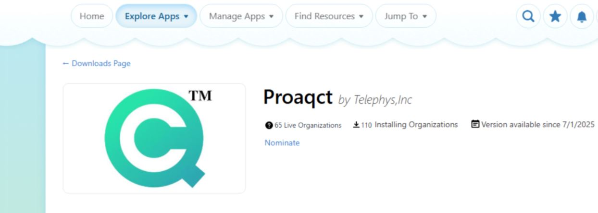
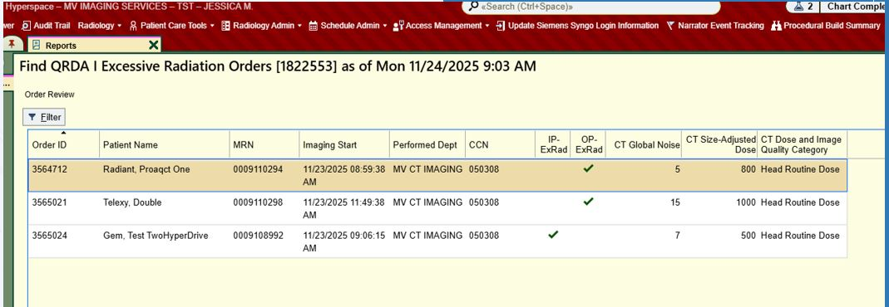
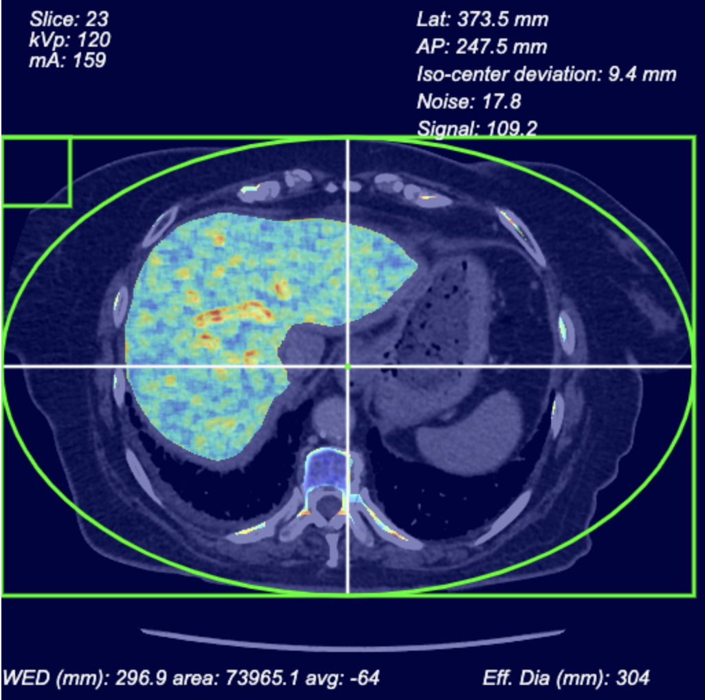

Here’s what to know about the ExRad eCQM for in / outpatient reporting:
- Beginning in 2027, ExRad reporting will be mandatory for all outpatient CT scans in adults (18+) performed in hospital settings
- In 2025, ExRad is one of the optional measures under the Inpatient Quality Reporting (IQR) program.
- Penalties of 0.825% reduction in reimbursement for Inpatient Reporting start in CY2025.
- Penalties of 2% b reduction in reimbursement for Outpatient Reporting start in CY2027.
What do we need to report?
- Number of diagnostic CT scans that have a size-adjusted radiation dose above the threshold defined for the specific CT category.
- CT scans with a noise value above the threshold specific to the CT category.
- Total number of diagnostic CT scans performed on patients aged 18+ during the one-year measurement period that have an assigned CT category.
How can our institution report ExRad to CMS?
Simply download ProAqCT from the EPIC Showroom!

ProAqCT automatically reports ExRad to EPIC

- ProAqCT integrates with Epic using FHIR R4. You can download the ProAqCT client from the Epic Showroom for free.
- ProAqCT guarantees top 90th-percentile performance for ExRad.
- Higher scores correlate with enhanced reimbursement rates and help avoid the 2% reduction in payments for non-compliance.

Let's maximize your CMS reimbursement with ProAqCT!
ProAqCT guarantees top 90th-percentile performance for ExRad!
ProAqCT is your all-in-one solution for
comprehensive measurements of global noise and
size-adjusted patient dose in every CT exam. By
leveraging our industry-leading algorithm, ProAqCT
provides a turnkey solution that perfectly aligns
with the proposed CMS requirements.
Say goodbye to tedious
data analysis and all the guess work on protocol optimization. With ProAqCT, you can streamline
your image-quality optimization and effortlessly
meet the new reporting requirements.
Let ProAqCT be your trusted partner for CMS reporting
Don’t settle for outdated solutions or struggle to meet the CMS requirement alone.
While other dose-monitoring platforms are just
catching up or lack the means to fulfill this
requirement, ProAqCT has been at the forefront of
robust image-quality monitoring since 2018.
Throughout these years, we have continuously
enhanced our global noise measurements by
leveraging machine-learning organ segmentation to
implement the Global Noise Index (GNI) methodology
by Ahmad et al. (MD Anderson).
This approach enables us to offer GNI benchmarking
specific to each exam type or CT category, alert
notifications for image-quality deviations, and
intuitive dashboards that offer valuable insights
for optimizing image quality.
As you consider options to meet the new reporting
requirements, we hope you will consider ProAqCT as
a cost-effective solution that not only satisfies
the current requirements but also drives
innovation.